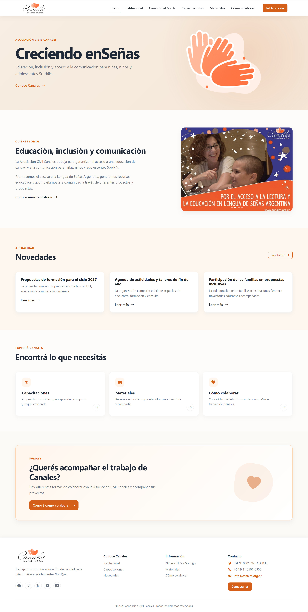
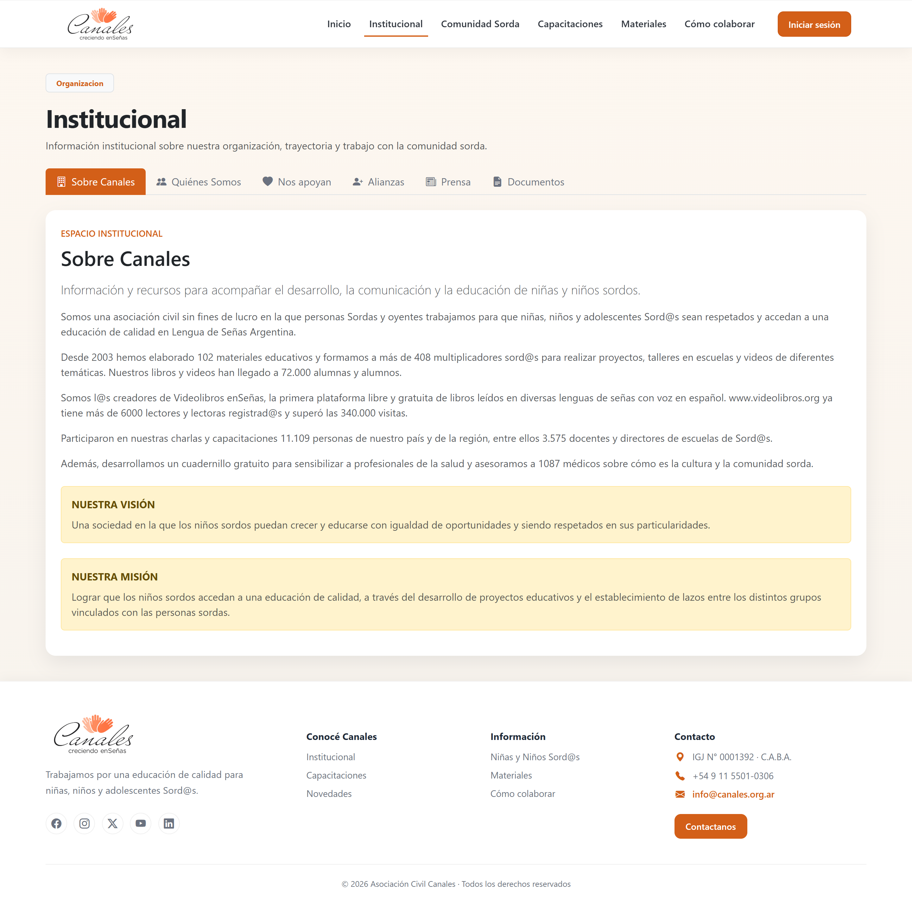
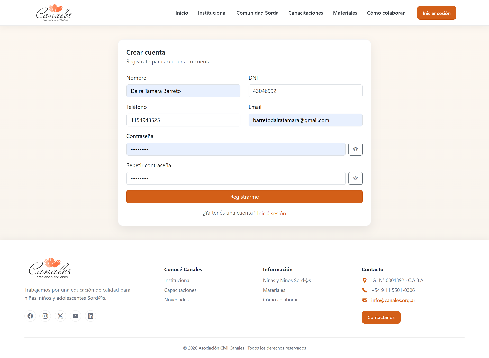
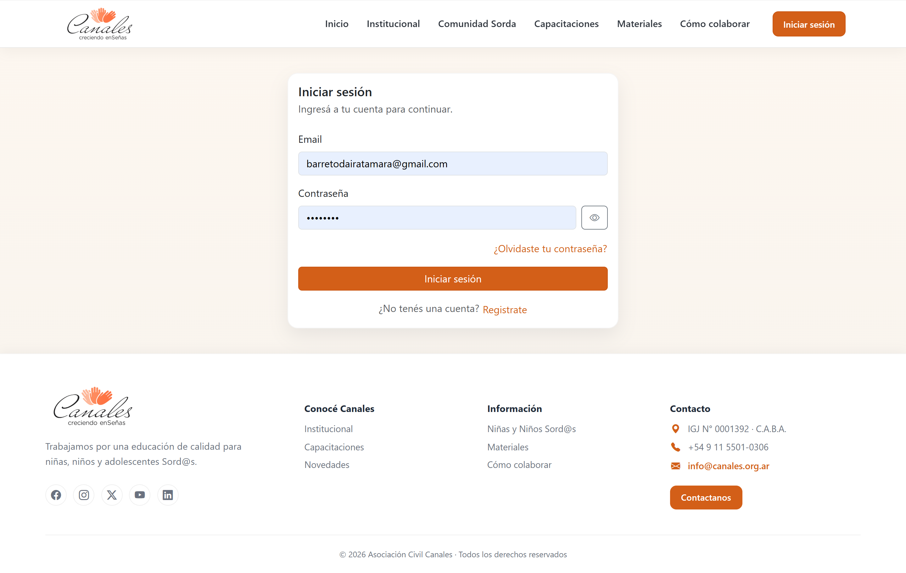

Te damos la bienvenida a CANALES. En esta guía vas a conocer la
plataforma, descubrir sus principales secciones y aprender cómo
crear tu propia cuenta para comenzar a utilizarla.
CONOCÉ LA PLATAFORMA
Explorá CANALES
Seleccioná uno de los apartados para conocer más sobre la
plataforma y aprender a utilizar sus principales opciones.
01
BIENVENIDO
¿Qué es CANALES?
CANALES es una plataforma que reúne información
institucional, propuestas de capacitación y materiales
educativos de la organización. También ofrece espacios para
que las personas puedan participar y colaborar.
Desde un mismo lugar podés conocer la organización, explorar
sus contenidos y acceder a las distintas opciones que ofrece
la plataforma.
¿Por dónde empezar?
Podés comenzar explorando las secciones disponibles
desde la barra de navegación. Cada una reúne información
y herramientas diferentes.
La página principal
Recorré la página de inicio para conocer su contenido.

02
RECORRÉ LA PLATAFORMA
Barra de navegación
La barra de navegación te permite desplazarte entre las
principales secciones de CANALES. Desde allí podés acceder a
la información institucional, las capacitaciones, los
materiales y las opciones de donación.
Seleccioná cada área para conocer qué información podés
encontrar en ella.
Institucional
En esta sección podés conocer la organización, su
identidad y la información institucional que comparte
con la comunidad.
Recorrido por Institucional
Captura completa de esta sección.

Capacitaciones
En esta sección podés explorar las propuestas
formativas disponibles y consultar información sobre
cada capacitación.
¿Querés aprender a inscribirte?
En la guía de Estudiante vamos a explicar el
proceso de inscripción y el acceso al aula virtual
mediante ejemplos prácticos.
Para acceder a las funcionalidades que requieren
autenticación, necesitás contar con una cuenta en CANALES.
A continuación, te mostramos cómo realizar el registro y
comenzar a utilizar tu cuenta.
1
Ingresá a la opción de registro
Desde la pantalla de inicio de sesión, seleccioná la
opción «Registrate» para acceder al formulario de
creación de cuenta.
Pantalla de registro
Captura completa del formulario.

2
Completá tus datos
El formulario de registro solicita los siguientes datos:
Nombre y apellido.
DNI.
Teléfono.
Correo electrónico.
Contraseña.
Confirmación de
contraseña.
3
Iniciá sesión
Una vez que tengas tu cuenta, ingresá con tu correo
electrónico y contraseña desde la pantalla de inicio de
sesión.
Pantalla de inicio de sesión
Captura completa de esta pantalla.

¿Olvidaste tu contraseña?
Desde la pantalla de inicio de sesión podés seleccionar
«¿Olvidaste tu contraseña?» para iniciar el proceso de
recuperación.
4
Accedé a tu perfil de usuario
Una vez que hayas iniciado sesión, en la barra de
navegación aparecerá tu nombre en el lugar donde antes
se encontraba la opción «Iniciar sesión».
Al seleccionar tu nombre, se desplegará un menú con
distintas opciones de acceso. Las opciones disponibles
pueden variar según el rol asignado a tu cuenta.
Desde este menú podés ingresar a tu perfil de usuario
para consultar la información de tu cuenta.
Menú de usuario y acceso al perfil
Identificá tu nombre en la barra de navegación y
desplegá el menú para acceder a tu perfil.